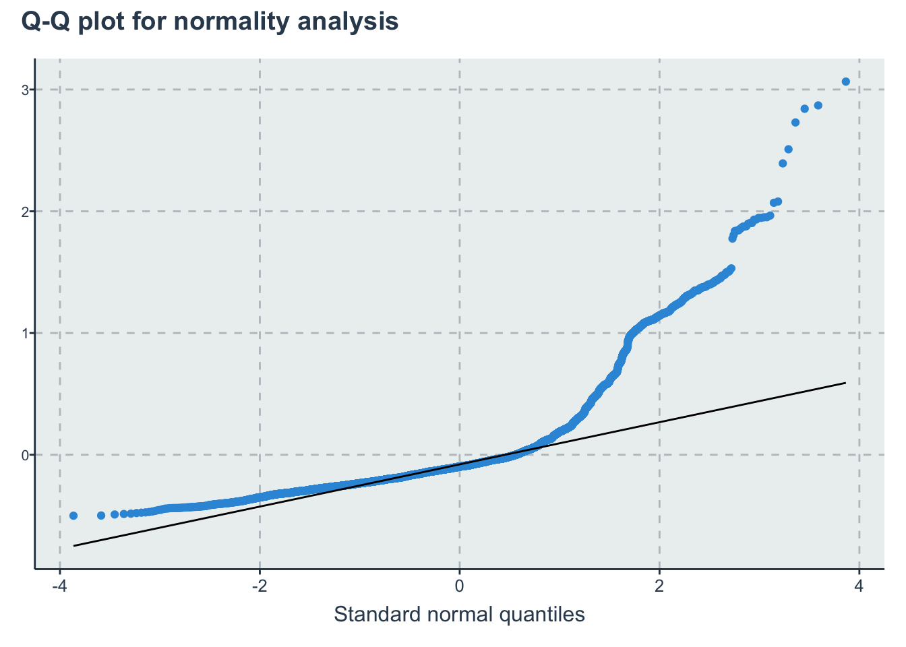
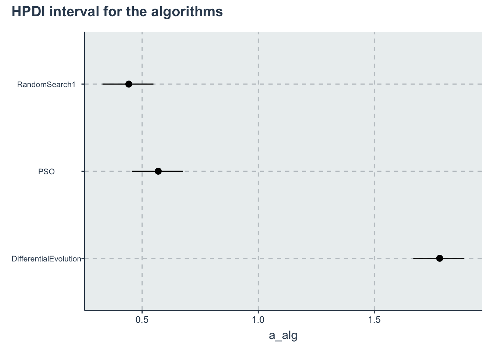
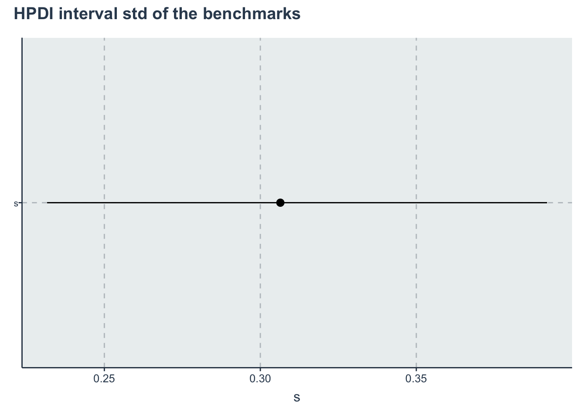
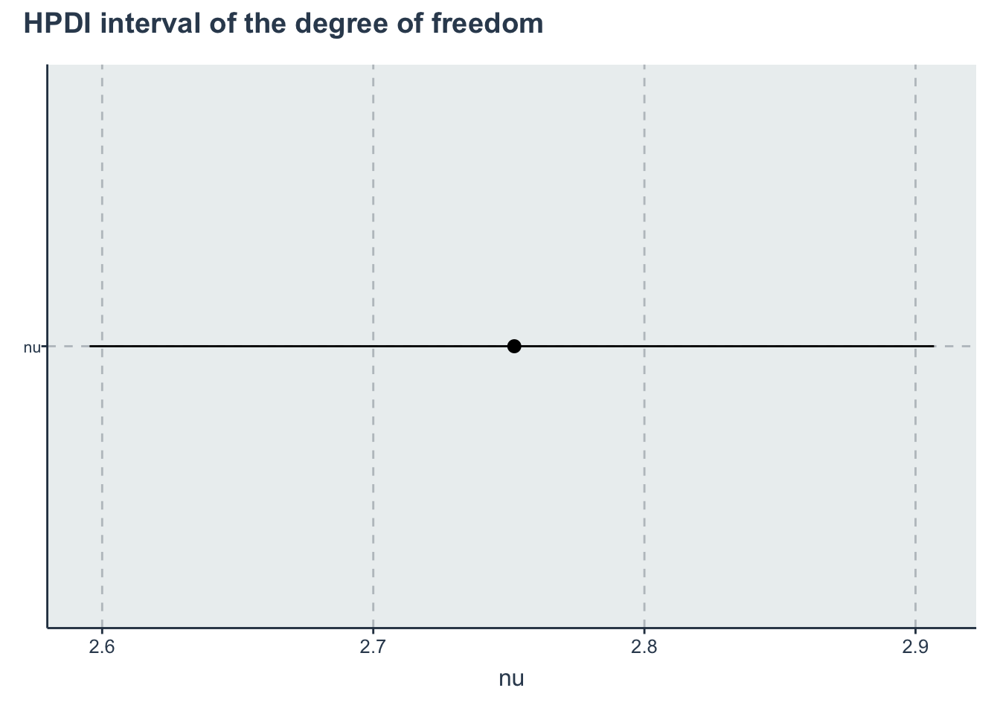
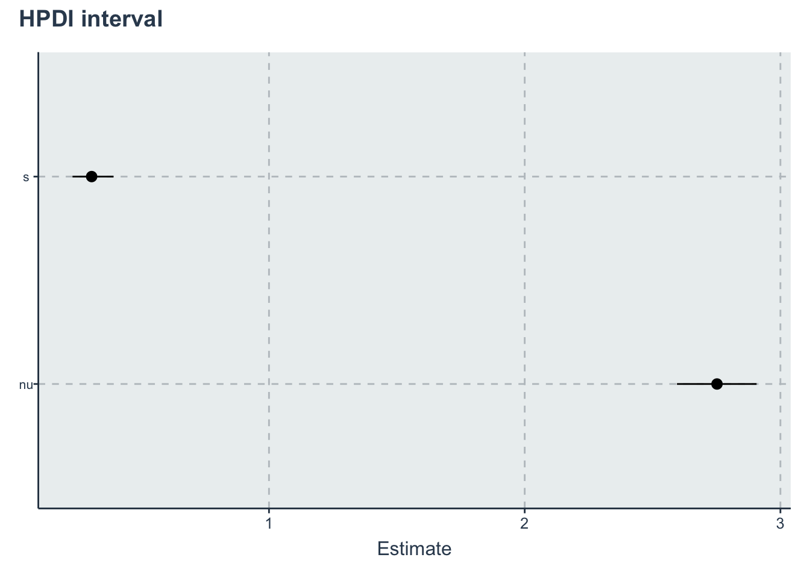

Chapter 6 Multiple-group comparison
We present here the Stan version of the BEST (Bayesian Estimation Supersedes the t Test) from John K. Kruschke. We will consider the following research question
RQ4-a: What is the average number of function evaluations that it takes for an algorithm to converge to a solution at a precision of \(\epsilon=0.1\), with a budget of 100,000 function evaluations per dimension?
RQ4-b: What is the impact of noise in the number of function evaluations that it takes for an algorithm to converge to a solution at a precision of \(\epsilon=0.1\), with a budget of 100,000 function evaluations per dimension?
6.1 Data preparation
We start importing the dataset
Filtering the data that we want and applying some transformations
d <- dataset %>% dplyr::filter(OptimizationSuccessful == TRUE & (Algorithm == "PSO" | Algorithm ==
"RandomSearch1" | Algorithm == "DifferentialEvolution")) %>% dplyr::select(Algorithm, CostFunction,
TimeToComplete, simNumber, MaxFeval) %>% dplyr::mutate(y = 10000 * TimeToComplete/MaxFeval,
CostFunctionID = create_index(CostFunction), AlgorithmID = create_index(Algorithm)) %>%
dplyr::select(Algorithm, AlgorithmID, CostFunction, CostFunctionID, y, -simNumber, -MaxFeval)
algorithms <- get_index_names_as_array(d$Algorithm)
bm <- get_index_names_as_array(d$CostFunction)The data should look like this:
kable(dplyr::sample_n(d, size = 10), "html", booktabs = T, format.args = list(scientific = FALSE),
digits = 3) %>% kable_styling(bootstrap_options = c("striped", "hover", "condensed"))| Algorithm | AlgorithmID | CostFunction | CostFunctionID | y |
|---|---|---|---|---|
| RandomSearch1 | 3 | Schwefel2d23N6 | 18 | 0.365 |
| PSO | 2 | ChenBird | 2 | 0.580 |
| PSO | 2 | Mishra7N6 | 10 | 0.445 |
| PSO | 2 | ChungReynoldsN2 | 4 | 0.389 |
| RandomSearch1 | 3 | Trefethen | 25 | 0.337 |
| RandomSearch1 | 3 | DiscusN2 | 6 | 0.515 |
| PSO | 2 | ChungReynoldsN2 | 4 | 0.446 |
| DifferentialEvolution | 1 | BentCigarN6 | 1 | 1.940 |
| RandomSearch1 | 3 | Price1 | 12 | 0.160 |
| DifferentialEvolution | 1 | StrechedVSineWave2N | 23 | 1.517 |
Some initial visualizations in terms of box-plots
p1 <- ggplot(d) + geom_boxplot(aes(x = Algorithm, y = y)) + labs(y = "Time to complete x10,000")
p1 + plot_annotation(title = "Box-plot of the time per evaluation")lmfit <- lm(y ~ Algorithm, data = d)
p2 <- ggplot() + geom_qq(aes(sample = lmfit$residuals)) + geom_qq_line(aes(sample = lmfit$residuals)) +
labs(x = "Standard normal quantiles", y = "Sample quantiles")
p2 + plot_annotation(title = "Q-Q plot for normality analysis")
6.2 Stan model
The Stan model is specified in the file: './stanmodels/multiplegroups.stan'
// Multiple group comparison
// Author: David Issa Mattos
// Date: 23 June 2020
//
//
data {
int <lower=1> N_total; // Sample size
real y[N_total]; // time to complete variable
//To model each algorithm independently
int <lower=1> N_algorithm; // Number of algorithms
int algorithm_id[N_total]; //vector that has the id of each algorithm
//To model the influence of each benchmark
int <lower=1> N_bm;
int bm_id[N_total];
}
parameters {
//Fixed effect
real a_alg[N_algorithm];//the mean effect given by the algorithms
real <lower=0> sigma[N_algorithm];//std for the student t
// //Random effect. The effect of the benchmarks
real a_bm_norm[N_bm];//the mean effect given by the base class type
real<lower=0> s;//std for the random effects
real<lower=0> nu;//std for the random effects
}
model {
real mu[N_total];
real sigma_i[N_total];
sigma ~ exponential(1);
nu ~ exponential(1.0/30.0);
//Fixed effect
a_alg ~ normal(0,1);
// //Random effects
s ~ exponential(1);
a_bm_norm ~ normal(0,1);
for (i in 1:N_total)
{
mu[i] = a_alg[algorithm_id[i]] + a_bm_norm[bm_id[i]]*s;
sigma_i[i] = sigma[algorithm_id[i]];
}
y ~ student_t(nu, mu, sigma_i);
}Let’s compile and start sampling with the Stan function. In the data folder you can find the specific data used to fit the model after all transformations "./data/multiplegroup-data.RDS"
standata <- list(N_total = nrow(d), y = d$y, N_algorithm = length(algorithms), algorithm_id = d$AlgorithmID,
N_bm = length(bm), bm_id = d$CostFunctionID)
saveRDS(standata, file = "./data/multiplegroups-data.RDS")For computation time sake we are not running this chunk every time we compile this document. From now on we will load from the saved Stan fit object. However, when we change our model or the data we can just run this chunk separately. Here we increased the maxtreedepth and the number of iterations so we have a higher effective sample for inference. Both of these do not impact the validity of the chain just the computation efficiency.
standata<-readRDS("./data/multiplegroups-data.RDS")
multiplegroup_fit <- stan(file = './stanmodels/multiplegroups.stan',
data=standata,
chains = 4,
warmup = 400,
iter = 4000,
# include = T,
# sample_file = "./stanmodels/multiplegroups.csv"
control = list(max_treedepth = 15))
saveRDS(multiplegroup_fit, file = "./data/multiplegroups-fit.RDS")6.3 Diagnosis
a_alg_v <- c("a_alg[1]", "a_alg[2]", "a_alg[3]")
sigma_v <- c("sigma[1]", "sigma[2]", "sigma[3]")
rstan::traceplot(multiplegroup_fit, pars = a_alg_v)Another diagnosis is to look at the Rhat. If Rhat is greater than 1.05 it indicates a divergence in the chains (they did not mix well). The table below shows a summary of the sampling.
kable(summary(multiplegroup_fit)$summary, "html", ) %>% kable_styling(bootstrap_options = c("striped",
"hover", "condensed"))| mean | se_mean | sd | 2.5% | 25% | 50% | 75% | 97.5% | n_eff | Rhat | |
|---|---|---|---|---|---|---|---|---|---|---|
| a_alg[1] | 1.7815819 | 0.0024748 | 0.0566810 | 1.6721093 | 1.7445310 | 1.7807935 | 1.8199106 | 1.8926830 | 524.5383 | 1.002721 |
| a_alg[2] | 0.5696040 | 0.0024743 | 0.0566789 | 0.4603005 | 0.5326239 | 0.5687407 | 0.6077809 | 0.6804053 | 524.7432 | 1.002723 |
| a_alg[3] | 0.4428074 | 0.0024754 | 0.0566494 | 0.3332348 | 0.4059292 | 0.4419022 | 0.4810402 | 0.5535471 | 523.7002 | 1.002756 |
| sigma[1] | 0.0876911 | 0.0000311 | 0.0017075 | 0.0844449 | 0.0865150 | 0.0876638 | 0.0888157 | 0.0911495 | 3013.0294 | 1.001474 |
| sigma[2] | 0.0694382 | 0.0000276 | 0.0014904 | 0.0665632 | 0.0684023 | 0.0693989 | 0.0704513 | 0.0724145 | 2913.9665 | 1.001041 |
| sigma[3] | 0.0368466 | 0.0000150 | 0.0008085 | 0.0352774 | 0.0363041 | 0.0368220 | 0.0373747 | 0.0384569 | 2897.1475 | 1.000519 |
| a_bm_norm[1] | 0.7192083 | 0.0086246 | 0.2094808 | 0.3161019 | 0.5779758 | 0.7220803 | 0.8677116 | 1.1162210 | 589.9497 | 1.003545 |
| a_bm_norm[2] | -0.1814373 | 0.0079796 | 0.1837739 | -0.5391235 | -0.3097406 | -0.1810262 | -0.0580464 | 0.1761930 | 530.4046 | 1.003210 |
| a_bm_norm[3] | -0.5827379 | 0.0083120 | 0.1959346 | -0.9565364 | -0.7190948 | -0.5808377 | -0.4482490 | -0.2036032 | 555.6618 | 1.004407 |
| a_bm_norm[4] | -0.6089228 | 0.0083542 | 0.1970467 | -0.9822168 | -0.7462298 | -0.6064975 | -0.4755324 | -0.2258659 | 556.3242 | 1.004509 |
| a_bm_norm[5] | -0.2476612 | 0.0080067 | 0.1849829 | -0.6059732 | -0.3757603 | -0.2457094 | -0.1225043 | 0.1104547 | 533.7774 | 1.003279 |
| a_bm_norm[6] | 0.4750596 | 0.0082505 | 0.1959683 | 0.0961207 | 0.3410841 | 0.4779159 | 0.6141989 | 0.8520264 | 564.1714 | 1.002989 |
| a_bm_norm[7] | -0.6420408 | 0.0083861 | 0.1987948 | -1.0201032 | -0.7794661 | -0.6404438 | -0.5074182 | -0.2562647 | 561.9448 | 1.004617 |
| a_bm_norm[8] | -0.1634319 | 0.0079914 | 0.1838506 | -0.5206348 | -0.2915316 | -0.1620165 | -0.0398618 | 0.1912232 | 529.2798 | 1.003135 |
| a_bm_norm[9] | 2.1154599 | 0.0123913 | 0.3386954 | 1.4588894 | 1.8888847 | 2.1236694 | 2.3444388 | 2.7697322 | 747.1082 | 1.006364 |
| a_bm_norm[10] | -0.1804465 | 0.0079840 | 0.1839089 | -0.5387432 | -0.3089380 | -0.1785651 | -0.0566686 | 0.1739718 | 530.6024 | 1.003236 |
| a_bm_norm[11] | 0.9041127 | 0.0089536 | 0.2222174 | 0.4740013 | 0.7546731 | 0.9095963 | 1.0585790 | 1.3270507 | 615.9702 | 1.004018 |
| a_bm_norm[12] | -0.7819305 | 0.0086115 | 0.2067054 | -1.1711710 | -0.9250797 | -0.7817243 | -0.6403822 | -0.3839085 | 576.1671 | 1.005135 |
| a_bm_norm[13] | -0.6772704 | 0.0084572 | 0.2008767 | -1.0568907 | -0.8167815 | -0.6756358 | -0.5401214 | -0.2884239 | 564.1649 | 1.004795 |
| a_bm_norm[14] | 1.7172228 | 0.0110972 | 0.2962334 | 1.1467413 | 1.5179348 | 1.7242375 | 1.9183202 | 2.2869387 | 712.5936 | 1.005705 |
| a_bm_norm[15] | -0.2509447 | 0.0080060 | 0.1849612 | -0.6096211 | -0.3798723 | -0.2493476 | -0.1265618 | 0.1081399 | 533.7393 | 1.003362 |
| a_bm_norm[16] | -0.6887018 | 0.0084737 | 0.2014353 | -1.0669924 | -0.8280677 | -0.6876355 | -0.5517005 | -0.2998266 | 565.0964 | 1.004953 |
| a_bm_norm[17] | -0.2987615 | 0.0080353 | 0.1858974 | -0.6575569 | -0.4267789 | -0.2965663 | -0.1724545 | 0.0592583 | 535.2275 | 1.003464 |
| a_bm_norm[18] | -0.2057157 | 0.0079888 | 0.1842716 | -0.5629628 | -0.3336642 | -0.2054677 | -0.0819283 | 0.1508168 | 532.0458 | 1.003351 |
| a_bm_norm[19] | -0.1772225 | 0.0079777 | 0.1838359 | -0.5353252 | -0.3051236 | -0.1764972 | -0.0539611 | 0.1780432 | 531.0154 | 1.003200 |
| a_bm_norm[20] | 0.0021975 | 0.0079578 | 0.1833495 | -0.3579432 | -0.1252151 | 0.0040986 | 0.1274310 | 0.3529663 | 530.8547 | 1.002951 |
| a_bm_norm[21] | -0.0370757 | 0.0079567 | 0.1833234 | -0.3970028 | -0.1650148 | -0.0351024 | 0.0858728 | 0.3142432 | 530.8508 | 1.002966 |
| a_bm_norm[22] | -0.2582016 | 0.0080267 | 0.1850542 | -0.6155364 | -0.3865295 | -0.2570828 | -0.1331500 | 0.0991284 | 531.5186 | 1.003413 |
| a_bm_norm[23] | -0.7357537 | 0.0085331 | 0.2038511 | -1.1186036 | -0.8766281 | -0.7351464 | -0.5982257 | -0.3425063 | 570.7101 | 1.004962 |
| a_bm_norm[24] | -0.8252724 | 0.0086947 | 0.2094949 | -1.2189848 | -0.9708733 | -0.8254469 | -0.6819852 | -0.4221552 | 580.5534 | 1.005230 |
| a_bm_norm[25] | -0.3359663 | 0.0080697 | 0.1868876 | -0.6971104 | -0.4646943 | -0.3327841 | -0.2091031 | 0.0259680 | 536.3423 | 1.003643 |
| a_bm_norm[26] | 0.3504413 | 0.0081328 | 0.1907707 | -0.0194125 | 0.2175444 | 0.3538897 | 0.4859020 | 0.7197615 | 550.2295 | 1.002923 |
| a_bm_norm[27] | -0.7344475 | 0.0085396 | 0.2039208 | -1.1172730 | -0.8755600 | -0.7335636 | -0.5964523 | -0.3408633 | 570.2296 | 1.004995 |
| a_bm_norm[28] | 3.7056060 | 0.0184140 | 0.5268846 | 2.6654739 | 3.3494149 | 3.7062854 | 4.0644549 | 4.7388580 | 818.7208 | 1.007627 |
| a_bm_norm[29] | -0.4139099 | 0.0081410 | 0.1892188 | -0.7771179 | -0.5447576 | -0.4105746 | -0.2855314 | -0.0474645 | 540.2168 | 1.003952 |
| a_bm_norm[30] | -0.1763685 | 0.0079847 | 0.1837990 | -0.5350264 | -0.3048733 | -0.1757948 | -0.0531583 | 0.1779765 | 529.8757 | 1.003222 |
| s | 0.3064198 | 0.0014329 | 0.0423732 | 0.2379312 | 0.2766066 | 0.3013470 | 0.3301371 | 0.4061672 | 874.5406 | 1.009378 |
| nu | 2.7520111 | 0.0015060 | 0.0796144 | 2.5992295 | 2.6986152 | 2.7495934 | 2.8046633 | 2.9117775 | 2794.5987 | 1.001687 |
| lp__ | 14070.3651083 | 0.1502401 | 5.7707953 | 14058.1445159 | 14066.7032470 | 14070.6873137 | 14074.3315285 | 14080.8165057 | 1475.3660 | 1.004358 |
6.4 Results and Plots
First lets get the HPDI of every parameter.
Then we restrict to the algorithms, them to the slopes, then to the parameter s
hpdi <- get_HPDI_from_stanfit(multiplegroup_fit)
hpdi_algorithm <- hpdi %>% dplyr::filter(str_detect(Parameter, "a_alg\\[")) %>% dplyr::mutate(Parameter = algorithms) #Changing to the algorithms labels
hpdi_sigma <- hpdi %>% dplyr::filter(str_detect(Parameter, "sigma\\[")) %>% dplyr::mutate(Parameter = algorithms) #Changing to the algorithms labels
hpdi_s <- hpdi %>% dplyr::filter(Parameter == "s")
hpdi_nu <- hpdi %>% dplyr::filter(Parameter == "nu")
hpdi_nu_s <- hpdi %>% dplyr::filter(Parameter == "nu" | Parameter == "s")
p_alg <- ggplot(data = hpdi_algorithm, aes(x = Parameter)) + geom_pointrange(aes(ymin = HPDI.lower,
ymax = HPDI.higher, y = Mean)) + labs(y = "a_alg", x = "Algorithm") + coord_flip()
p_alg + plot_annotation(title = "HPDI interval for the algorithms")
p_sigma <- ggplot(data = hpdi_sigma, aes(x = Parameter)) + geom_pointrange(aes(ymin = HPDI.lower,
ymax = HPDI.higher, y = Mean)) + labs(y = "sigma", x = "Algorithm") + coord_flip()
p_sigma + plot_annotation(title = "HPDI interval for sigma")p_s <- ggplot(data = hpdi_s, aes(x = Parameter)) + geom_pointrange(aes(ymin = HPDI.lower, ymax = HPDI.higher,
y = Mean)) + labs(y = "s", x = "Parameter") + coord_flip()
p_s + plot_annotation(title = "HPDI interval std of the benchmarks")
p_nu <- ggplot(data = hpdi_nu, aes(x = Parameter)) + geom_pointrange(aes(ymin = HPDI.lower,
ymax = HPDI.higher, y = Mean)) + labs(y = "nu", x = "Parameter") + coord_flip()
p_nu + plot_annotation(title = "HPDI interval of the degree of freedom")
p_nu_s <- ggplot(data = hpdi_nu_s, aes(x = Parameter)) + geom_pointrange(aes(ymin = HPDI.lower,
ymax = HPDI.higher, y = Mean)) + labs(y = "Estimate", x = "Parameter") + coord_flip()
p_nu_s + plot_annotation(title = "HPDI interval")
Now lets get a posterior distribution of the difference
posterior <- rstan::extract(multiplegroup_fit)
a_alg <- as_tibble(posterior$a_alg)
colnames(a_alg) <- algorithms
sample_a_alg <- dplyr::sample_n(a_alg, size = 1000, replace = T) %>% dplyr::mutate(PSO_Random = PSO -
RandomSearch1, DE_PSO = DifferentialEvolution - PSO, DE_Random = DifferentialEvolution -
RandomSearch1) %>% dplyr::select(-DifferentialEvolution, -PSO, -RandomSearch1)
# Getting HPDI from a data frame and creating a table instead of plotting...
hpdi_diff <- HDInterval::hdi(sample_a_alg, credMass = 0.95)
hpdi_diff <- hpdi_diff %>% as_tibble(rownames = "Metric") %>% tibble::add_row(Metric = "Mean",
PSO_Random = mean(sample_a_alg$PSO_Random), DE_PSO = mean(sample_a_alg$DE_PSO), DE_Random = mean(sample_a_alg$DE_Random)) %>%
tidyr::pivot_longer(cols = -Metric, names_to = "AlgorithmDifference", values_to = "values") %>%
tidyr::pivot_wider(names_from = Metric, values_from = values) %>% dplyr::mutate(Difference = c("PSO - RandomSearch",
"DifferentialEvolution - PSO", "DifferentialEvolution - RandomSearch")) %>% dplyr::select(Difference,
Lower = lower, Mean, Upper = upper)
kable(hpdi_diff, booktabs = T, format.args = list(scientific = FALSE), digits = 3) %>% kable_styling(bootstrap_options = c("striped",
"hover", "condensed"))| Difference | Lower | Mean | Upper |
|---|---|---|---|
| PSO - RandomSearch | 0.123 | 0.127 | 0.130 |
| DifferentialEvolution - PSO | 1.207 | 1.212 | 1.217 |
| DifferentialEvolution - RandomSearch | 1.335 | 1.339 | 1.343 |
Creating an output table
rename_pars <- c(paste(rep("a_", length(algorithms)), algorithms, sep = ""), paste(rep("sigma_",
length(algorithms)), algorithms, sep = ""), "s", "nu")
t <- create_table_model(multiplegroup_fit, pars = c(a_alg_v, sigma_v, "s", "nu"), rename_pars)
saveRDS(t, "./statscomp-paper/tables/datafortables/multiplegroupsdifference-par-table.RDS")